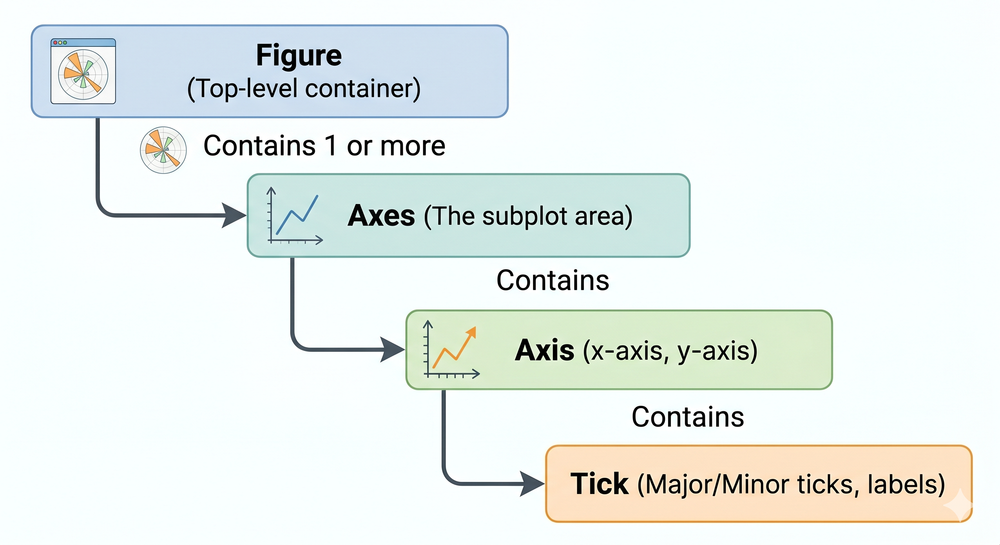
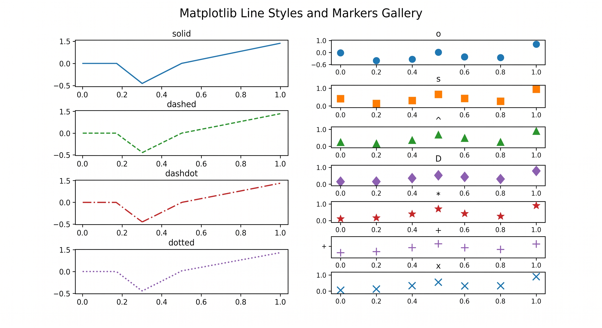
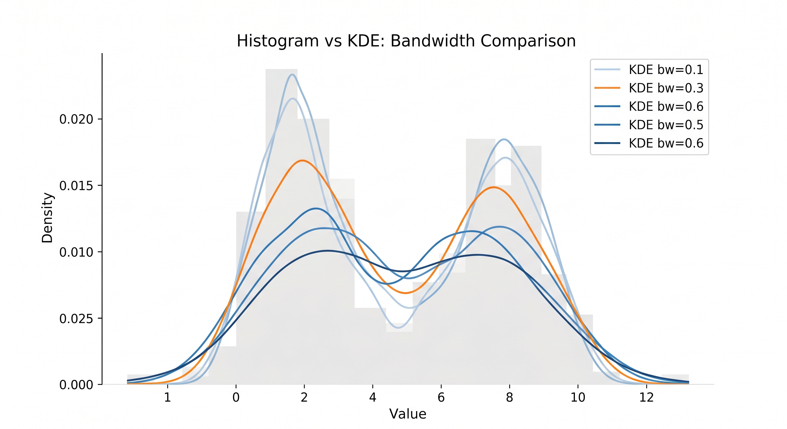
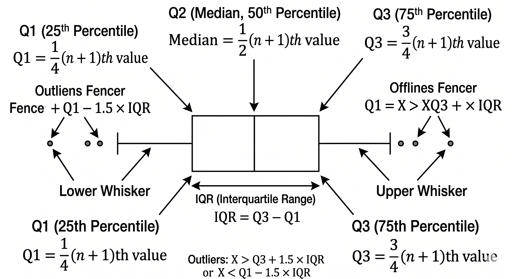

1.3.1 Visualizacion con Matplotlib#
Indice#
1. Arquitectura y Modelo de Objetos#
Matplotlib sigue una jerarquia de contenedores estricta:
Figure
└── Axes (uno o varios)
├── Axis (x e y)
│ ├── Tick (mayor y menor)
│ └── Label
├── Line2D
├── Patch (rectangulos, circulos, etc.)
├── Text (titulo, etiquetas)
└── Legend

1.1 Las dos interfaces#
Matplotlib ofrece dos formas de trabajar:
Interfaz pyplot (stateful): orientada a scripts rapidos. Mantiene estado interno de la figura y ejes activos.
import matplotlib.pyplot as plt
plt.plot([1, 2, 3], [4, 5, 6])
plt.title('Mi grafica')
plt.show()
Interfaz orientada a objetos (OO): recomendada para produccion. Se trabaja directamente con los objetos Figure y Axes.
fig, ax = plt.subplots()
ax.plot([1, 2, 3], [4, 5, 6])
ax.set_title('Mi grafica')
plt.show()
Regla practica: usa pyplot para exploración rapida en notebooks. Usa la interfaz OO para código que va a produccion, funciones reutilizables o multiples subplots.
1.2 El ciclo de vida de una figura#
1. Crear figura y ejes -> fig, ax = plt.subplots()
2. Dibujar elementos -> ax.plot(), ax.bar(), etc.
3. Personalizar -> ax.set_title(), ax.set_xlabel(), etc.
4. Renderizar o guardar -> plt.show() o fig.savefig()
5. Cerrar y liberar -> plt.close(fig)
1.3 Configuracion global con rcParams#
rcParams es el diccionario de parametros globales de Matplotlib. Controla el estilo por defecto de todas las graficas.
import matplotlib as mpl
# Ver todos los parametros disponibles
print(mpl.rcParams.keys())
# Cambiar parametros globales
mpl.rcParams['figure.figsize'] = (10, 6)
mpl.rcParams['font.size'] = 12
mpl.rcParams['axes.grid'] = True
mpl.rcParams['axes.spines.top'] = False
mpl.rcParams['axes.spines.right'] = False
# O usando el context manager (solo afecta al bloque)
with mpl.rc_context({'font.size': 16, 'axes.grid': True}):
fig, ax = plt.subplots()
ax.plot([1, 2, 3])

2. Figure y Axes#
2.1 Crear figuras#
import matplotlib.pyplot as plt
import numpy as np
# Forma basica: figura con un solo Axes
fig, ax = plt.subplots()
# Con tamano especifico (pulgadas)
fig, ax = plt.subplots(figsize=(10, 6))
# Con resolucion (DPI = dots per inch)
# 72 dpi: pantalla baja resolucion
# 150 dpi: pantalla normal
# 300 dpi: impresion de alta calidad
fig, ax = plt.subplots(figsize=(10, 6), dpi=150)
# Multiples subplots en grilla
fig, axes = plt.subplots(nrows=2, ncols=3, figsize=(15, 8))
# axes es un array de forma (2, 3)
# axes[0, 0] es el subplot superior izquierdo
2.2 Propiedades del Axes#
fig, ax = plt.subplots(figsize=(8, 5))
# Limites de los ejes
ax.set_xlim(0, 10)
ax.set_ylim(-5, 5)
# Etiquetas de los ejes
ax.set_xlabel('Tiempo (s)', fontsize=13, labelpad=10)
ax.set_ylabel('Amplitud', fontsize=13, labelpad=10)
# Titulo
ax.set_title('Señal de ejemplo', fontsize=15, fontweight='bold', pad=15)
# Marcas (ticks) personalizadas
ax.set_xticks([0, 2, 4, 6, 8, 10])
ax.set_xticklabels(['0s', '2s', '4s', '6s', '8s', '10s'])
# Escala logaritmica
ax.set_xscale('log') # eje X en escala log base 10
ax.set_yscale('log') # eje Y en escala log
ax.set_xscale('symlog') # log simetrica (permite valores negativos)
# Cuadricula
ax.grid(True, which='major', linestyle='--', alpha=0.7, color='gray')
ax.grid(True, which='minor', linestyle=':', alpha=0.3)
ax.minorticks_on()
# Espinas (bordes del grafico)
ax.spines['top'].set_visible(False)
ax.spines['right'].set_visible(False)
ax.spines['left'].set_linewidth(1.5)
ax.spines['bottom'].set_linewidth(1.5)
2.3 Sistema de coordenadas y transformaciones#
Matplotlib usa tres sistemas de coordenadas:
Sistema |
Descripcion |
Uso |
|---|---|---|
Data |
Coordenadas de los datos (valores reales) |
Elementos del grafico |
Axes |
[0,1] x [0,1] relativo al Axes |
Anotaciones relativas |
Figure |
[0,1] x [0,1] relativo a la Figure |
Textos globales |
Display |
Pixeles en pantalla |
Calculos de renderizado |
# Transformaciones explicitas
ax.text(0.5, 0.95, # posicion en coordenadas Axes
'Texto centrado',
transform=ax.transAxes, # indicar sistema de coordenadas
ha='center', va='top', fontsize=11)
ax.annotate('Punto importante',
xy=(3.5, 2.1), # punta de flecha: coordenadas DATA
xytext=(5, 4), # texto: coordenadas DATA
xycoords='data',
arrowprops=dict(arrowstyle='->', color='red', lw=2))
3. Graficas de Linea#
La grafica de linea conecta puntos \((x_i, y_i)\) con segmentos. Ideal para series temporales y funciones continuas.
3.1 Parametros de ax.plot()#
x = np.linspace(0, 2 * np.pi, 300)
fig, ax = plt.subplots(figsize=(10, 5))
# Parametros principales de plot():
# x, y : datos
# color : color de la linea (nombre, hex, RGB, RGBA)
# linewidth : grosor en puntos (lw)
# linestyle : tipo de linea (ls)
# marker : marcador en cada punto
# markersize: tamano del marcador (ms)
# alpha : transparencia [0, 1]
# label : etiqueta para la leyenda
ax.plot(x, np.sin(x),
color='steelblue',
linewidth=2.5,
linestyle='-',
label='sin(x)')
ax.plot(x, np.cos(x),
color='darkorange',
linewidth=2.5,
linestyle='--',
label='cos(x)')
ax.plot(x, np.sin(x) * np.cos(x),
color='seagreen',
linewidth=1.5,
linestyle='-.',
label='sin(x)·cos(x)')
ax.axhline(y=0, color='black', linewidth=0.8, linestyle=':') # linea horizontal
ax.axvline(x=np.pi, color='red', linewidth=0.8, linestyle=':') # linea vertical
ax.set_xlabel('x (radianes)')
ax.set_ylabel('f(x)')
ax.set_title('Funciones trigonometricas')
ax.legend(fontsize=11, framealpha=0.9)
ax.grid(True, alpha=0.3)
plt.tight_layout()
plt.show()
3.2 Estilos de linea y marcadores#
# Estilos de linea (linestyle / ls)
estilos = ['-', '--', '-.', ':', (0, (3, 1, 1, 1))]
nombres = ['solida', 'guiones', 'punto-guion', 'punteada', 'personalizada']
# Marcadores comunes
marcadores = ['o', 's', '^', 'D', 'v', '<', '>', 'p', '*', 'h', '+', 'x']
# o=circulo, s=cuadrado, ^=triangulo arriba, D=diamante, v=triangulo abajo
# p=pentagono, *=estrella, h=hexagono, +=cruz, x=x
# Ejemplo con marcadores cada N puntos (markevery)
x = np.linspace(0, 10, 200)
fig, ax = plt.subplots(figsize=(10, 4))
ax.plot(x, np.sin(x),
marker='o',
markevery=20, # marcador cada 20 puntos (evita saturacion)
markersize=8,
markerfacecolor='white', # relleno del marcador
markeredgecolor='steelblue',
markeredgewidth=2,
linewidth=2, color='steelblue')
plt.tight_layout()
plt.show()
3.3 Area bajo la curva con fill_between#
x = np.linspace(0, 2 * np.pi, 300)
y1 = np.sin(x)
y2 = np.sin(x) + 0.5
fig, ax = plt.subplots(figsize=(10, 5))
ax.plot(x, y1, color='steelblue', lw=2, label='sin(x)')
ax.plot(x, y2, color='darkorange', lw=2, label='sin(x) + 0.5')
# fill_between: rellena el area entre dos curvas
# where: condicion para rellenar solo ciertas regiones
ax.fill_between(x, y1, y2,
where=(y2 > y1), # solo donde y2 > y1
alpha=0.3,
color='steelblue',
label='Diferencia')
ax.fill_between(x, y1, 0, # area hasta el eje X
where=(y1 > 0),
alpha=0.15,
color='darkorange')
ax.axhline(0, color='black', lw=0.8)
ax.legend(); ax.grid(True, alpha=0.3)
plt.tight_layout(); plt.show()
3.4 Escala logaritmica en visualizacion de datos reales#
La escala logaritmica es esencial cuando los datos abarcan varios ordenes de magnitud. Si \(y = a \cdot x^b\), en escala log-log se convierte en una linea recta:
x = np.logspace(0, 4, 100) # 10^0 a 10^4
fig, axes = plt.subplots(1, 2, figsize=(12, 4))
# Escala lineal: la curva parece plana para x pequenos
axes[0].plot(x, x**2, color='steelblue', lw=2)
axes[0].set_title('Escala lineal'); axes[0].set_xlabel('x'); axes[0].set_ylabel('x²')
axes[0].grid(True, alpha=0.3)
# Escala log-log: revela la relacion de potencia
axes[1].plot(x, x**2, color='steelblue', lw=2)
axes[1].set_xscale('log'); axes[1].set_yscale('log')
axes[1].set_title('Escala log-log (pendiente = 2)')
axes[1].set_xlabel('x (log)'); axes[1].set_ylabel('x² (log)')
axes[1].grid(True, which='both', alpha=0.3)
plt.tight_layout(); plt.show()

4. Graficas de Dispersion#
El scatter plot muestra la relacion entre dos variables cuantitativas. Permite codificar hasta 4 dimensiones: posicion X, posicion Y, tamaño del punto y color.
4.1 ax.scatter() con codificacion multivariada#
np.random.seed(42)
n = 200
x = np.random.randn(n)
y = 0.8 * x + np.random.randn(n) * 0.5
size = np.abs(np.random.randn(n)) * 100 + 20 # tamaño proporcional a una variable
color = np.arctan2(y, x) # color = angulo en el plano
fig, ax = plt.subplots(figsize=(9, 6))
sc = ax.scatter(
x, y,
c=color, # variable codificada en color
s=size, # variable codificada en tamaño
cmap='RdYlBu', # paleta de colores divergente
alpha=0.75,
edgecolors='white',
linewidths=0.5,
)
# Barra de color: interpreta la variable codificada en color
cbar = plt.colorbar(sc, ax=ax)
cbar.set_label('Angulo (rad)', fontsize=11)
# Linea de tendencia: regresion lineal simple
# y = beta_0 + beta_1 * x, donde beta_1 = cov(x,y)/var(x)
m, b = np.polyfit(x, y, 1) # ajuste polinomio de grado 1
x_line = np.linspace(x.min(), x.max(), 100)
ax.plot(x_line, m * x_line + b,
color='black', lw=2, linestyle='--',
label=f'Regresion: y = {m:.2f}x + {b:.2f}')
ax.set_xlabel('Variable X'); ax.set_ylabel('Variable Y')
ax.set_title('Scatter con 4 dimensiones: X, Y, tamaño, color')
ax.legend(fontsize=10)
ax.grid(True, alpha=0.3)
plt.tight_layout(); plt.show()
# Correlacion de Pearson
r = np.corrcoef(x, y)[0, 1]
print(f'Correlacion de Pearson: r = {r:.3f}')
print(f'R² = {r**2:.3f}')
4.2 Grafica de burbuja#
Variante del scatter donde el tamaño de la burbuja codifica una tercera variable cuantitativa.
categorias = ['A', 'B', 'C', 'D', 'E', 'F']
valores_x = [2, 5, 8, 3, 7, 4]
valores_y = [6, 3, 7, 5, 2, 8]
tamanios = [200, 600, 400, 800, 300, 1000]
colores_cat = ['#e41a1c','#377eb8','#4daf4a','#984ea3','#ff7f00','#a65628']
fig, ax = plt.subplots(figsize=(8, 6))
for i, (cat, cx, cy, s, c) in enumerate(zip(categorias, valores_x, valores_y, tamanios, colores_cat)):
ax.scatter(cx, cy, s=s, c=c, alpha=0.7, edgecolors='white', linewidth=1.5)
ax.annotate(cat, (cx, cy), ha='center', va='center',
fontweight='bold', fontsize=11, color='white')
ax.set_xlabel('Metrica X'); ax.set_ylabel('Metrica Y')
ax.set_title('Grafica de burbujas: X, Y y tamaño como tercera variable')
ax.grid(True, alpha=0.3)
plt.tight_layout(); plt.show()
5. Graficas de Barras#
Las barras representan datos categoricos o comparativos. El area de la barra es proporcional al valor que representa.
5.1 Barras verticales y horizontales#
categorias = ['Python', 'JavaScript', 'Java', 'C++', 'R', 'Go']
valores = [68.5, 62.3, 35.4, 22.1, 18.7, 15.2]
colores = ['#1f77b4','#ff7f0e','#2ca02c','#d62728','#9467bd','#8c564b']
fig, axes = plt.subplots(1, 2, figsize=(14, 5))
# Barras verticales
barras = axes[0].bar(categorias, valores,
color=colores, edgecolor='white',
linewidth=1.2, width=0.6)
# Etiquetas encima de cada barra
for barra, val in zip(barras, valores):
axes[0].text(barra.get_x() + barra.get_width() / 2,
barra.get_height() + 0.5,
f'{val}%',
ha='center', va='bottom', fontsize=10, fontweight='bold')
axes[0].set_ylabel('Popularidad (%)'); axes[0].set_title('Lenguajes mas populares (2024)')
axes[0].set_ylim(0, 80); axes[0].grid(axis='y', alpha=0.3)
axes[0].spines['top'].set_visible(False); axes[0].spines['right'].set_visible(False)
# Barras horizontales (mejor para etiquetas largas)
# Ordenar por valor para facilitar la comparacion
orden = np.argsort(valores)
axes[1].barh([categorias[i] for i in orden],
[valores[i] for i in orden],
color=[colores[i] for i in orden],
edgecolor='white', height=0.6)
axes[1].set_xlabel('Popularidad (%)')
axes[1].set_title('Mismo dato, orientacion horizontal')
axes[1].grid(axis='x', alpha=0.3)
axes[1].spines['top'].set_visible(False); axes[1].spines['right'].set_visible(False)
plt.tight_layout(); plt.show()
5.2 Barras agrupadas y apiladas#
trimestres = ['Q1', 'Q2', 'Q3', 'Q4']
producto_a = [120, 145, 132, 168]
producto_b = [98, 110, 125, 140]
producto_c = [75, 88, 95, 102]
x = np.arange(len(trimestres))
ancho = 0.25 # ancho de cada barra
fig, axes = plt.subplots(1, 2, figsize=(14, 5))
# ── Barras agrupadas ──────────────────────────────────
# Las barras se desplazan en X: grupo centrado en x[i]
b1 = axes[0].bar(x - ancho, producto_a, ancho, label='Producto A', color='#4C72B0')
b2 = axes[0].bar(x, producto_b, ancho, label='Producto B', color='#DD8452')
b3 = axes[0].bar(x + ancho, producto_c, ancho, label='Producto C', color='#55A868')
axes[0].set_xticks(x); axes[0].set_xticklabels(trimestres)
axes[0].set_ylabel('Ventas (unidades)'); axes[0].set_title('Barras agrupadas')
axes[0].legend(); axes[0].grid(axis='y', alpha=0.3)
axes[0].spines['top'].set_visible(False); axes[0].spines['right'].set_visible(False)
# ── Barras apiladas ───────────────────────────────────
# bottom: punto de inicio de cada capa
axes[1].bar(trimestres, producto_a, label='Producto A', color='#4C72B0')
axes[1].bar(trimestres, producto_b, bottom=producto_a, label='Producto B', color='#DD8452')
axes[1].bar(trimestres, producto_c,
bottom=[a+b for a,b in zip(producto_a, producto_b)],
label='Producto C', color='#55A868')
axes[1].set_ylabel('Ventas totales'); axes[1].set_title('Barras apiladas (total acumulado)')
axes[1].legend(loc='upper left'); axes[1].grid(axis='y', alpha=0.3)
axes[1].spines['top'].set_visible(False); axes[1].spines['right'].set_visible(False)
plt.tight_layout(); plt.show()
5.3 Barras con barras de error#
Las barras de error comunican la incertidumbre o variabilidad de la medicion. Son esenciales en graficas cientificas.
# Datos de experimento: media ± desviacion estandar
grupos = ['Control', 'Tratamiento A', 'Tratamiento B', 'Tratamiento C']
medias = [2.3, 3.7, 2.9, 4.2]
errores = [0.3, 0.5, 0.4, 0.6] # desviacion estandar o intervalo de confianza
fig, ax = plt.subplots(figsize=(8, 5))
barras = ax.bar(grupos, medias,
yerr=errores, # barras de error
capsize=6, # tamano del capuchon de la barra de error
error_kw={'elinewidth': 2, 'ecolor': 'black', 'capthick': 2},
color=['#aec7e8','#ffbb78','#98df8a','#ff9896'],
edgecolor='white', linewidth=1.2)
ax.set_ylabel('Respuesta media ± SD')
ax.set_title('Resultados con barras de error (media ± desviacion estandar)')
ax.grid(axis='y', alpha=0.3)
ax.spines['top'].set_visible(False); ax.spines['right'].set_visible(False)
plt.tight_layout(); plt.show()
6. Histogramas y Distribuciones#
6.1 Fundamentos matematicos del histograma#
El histograma estima la funcion de densidad de probabilidad \(f(x)\) de una variable aleatoria. Para \(n\) observaciones divididas en \(k\) bins de ancho \(h\):
donde \(n_i\) es el numero de observaciones en el bin \(i\).
Regla de Sturges para elegir el numero de bins:
Regla de Freedman-Diaconis (mas robusta a outliers):
6.2 ax.hist() con opciones avanzadas#
np.random.seed(42)
datos_normal = np.random.normal(loc=5, scale=2, size=1000)
datos_bimodal = np.concatenate([
np.random.normal(2, 0.8, 500),
np.random.normal(7, 1.2, 500)
])
fig, axes = plt.subplots(1, 3, figsize=(15, 5))
# ── Histograma basico con density=True ────────────────
n, bins, patches = axes[0].hist(
datos_normal,
bins=30, # numero de bins
density=True, # normalizar para que el area = 1 (estimacion de pdf)
color='steelblue',
edgecolor='white',
alpha=0.8,
label='Datos'
)
# Superponer la PDF teorica N(5, 4)
from scipy import stats
x_line = np.linspace(datos_normal.min(), datos_normal.max(), 200)
axes[0].plot(x_line, stats.norm.pdf(x_line, 5, 2),
'r-', lw=2.5, label='N(5, 2) teórica')
axes[0].set_title('Histograma + PDF teórica')
axes[0].legend(); axes[0].set_xlabel('Valor'); axes[0].set_ylabel('Densidad')
# ── Comparacion de varios datasets ────────────────────
axes[1].hist(datos_normal, bins=30, density=True,
alpha=0.5, color='steelblue', label='Normal(5,2)', edgecolor='none')
axes[1].hist(datos_bimodal, bins=30, density=True,
alpha=0.5, color='darkorange', label='Bimodal', edgecolor='none')
axes[1].set_title('Comparacion de distribuciones')
axes[1].legend(); axes[1].set_xlabel('Valor')
# ── Histograma 2D ──────────────────────────────────────
x2d = np.random.normal(0, 1, 5000)
y2d = 0.7 * x2d + np.random.normal(0, 0.7, 5000)
h, xedges, yedges, img = axes[2].hist2d(
x2d, y2d,
bins=40,
cmap='Blues', # paleta de color para la frecuencia
density=True,
)
plt.colorbar(img, ax=axes[2], label='Densidad')
axes[2].set_title('Histograma 2D'); axes[2].set_xlabel('X'); axes[2].set_ylabel('Y')
plt.tight_layout(); plt.show()
6.3 Estimacion de densidad por kernel (KDE)#
El KDE es una alternativa mas suave al histograma. La estimacion en el punto \(x\) es:
donde \(K\) es la funcion kernel (tipicamente gaussiana) y \(h\) el ancho de banda (bandwidth).
from scipy.stats import gaussian_kde
datos = np.concatenate([np.random.normal(0, 1, 300), np.random.normal(5, 1.5, 200)])
fig, ax = plt.subplots(figsize=(9, 5))
ax.hist(datos, bins=30, density=True, alpha=0.4,
color='steelblue', edgecolor='white', label='Histograma')
# KDE con distintos anchos de banda
x_kde = np.linspace(datos.min()-1, datos.max()+1, 500)
for bw, color, lbl in [
(0.3, 'red', 'KDE bw=0.3 (sobreajuste)'),
(0.8, 'green', 'KDE bw=0.8 (optimo)'),
(3.0, 'purple', 'KDE bw=3.0 (suavizado excesivo)'),
]:
kde = gaussian_kde(datos, bw_method=bw)
ax.plot(x_kde, kde(x_kde), color=color, lw=2, label=lbl)
ax.set_xlabel('Valor'); ax.set_ylabel('Densidad')
ax.set_title('Estimacion KDE con distintos anchos de banda')
ax.legend(fontsize=10); ax.grid(True, alpha=0.3)
plt.tight_layout(); plt.show()
7. Graficas de Torta#
# NOTA: las graficas de torta tienen limitaciones serias de percepcion.
# Los humanos percibimos angulos y areas con menos precision que longitudes.
# Usarlas solo cuando hay pocas categorias (max 5-6) y los porcentajes
# se complementan a 100%. Para comparar valores, prefiere barras.
etiquetas = ['Python', 'JavaScript', 'Java', 'C++', 'Otros']
tamanios = [35, 28, 18, 12, 7]
explotar = (0.05, 0, 0, 0, 0) # separar la primera porcion
colores = ['#4C72B0', '#DD8452', '#55A868', '#C44E52', '#8172B2']
fig, axes = plt.subplots(1, 2, figsize=(14, 6))
# ── Torta basica ─────────────────────────────────────
wedges, texts, autotexts = axes[0].pie(
tamanios,
explode=explotar,
labels=etiquetas,
colors=colores,
autopct='%1.1f%%', # formato del porcentaje
pctdistance=0.82, # distancia del porcentaje al centro
startangle=90, # angulo de inicio (0=derecha, 90=arriba)
wedgeprops=dict(edgecolor='white', linewidth=2),
)
for autotext in autotexts:
autotext.set_fontsize(10); autotext.set_fontweight('bold')
axes[0].set_title('Grafica de torta simple')
# ── Donut chart (variante moderna) ───────────────────
wedges2, texts2 = axes[1].pie(
tamanios,
colors=colores,
startangle=90,
wedgeprops=dict(width=0.5, edgecolor='white', linewidth=2), # width<1 -> donut
)
# Texto central del donut
axes[1].text(0, 0, '100%\nTotal', ha='center', va='center',
fontsize=14, fontweight='bold')
axes[1].legend(wedges2, [f'{e}: {t}%' for e,t in zip(etiquetas,tamanios)],
loc='lower center', bbox_to_anchor=(0.5, -0.1), ncol=3, fontsize=9)
axes[1].set_title('Donut chart (variante moderna)')
plt.tight_layout(); plt.show()
8. Boxplots y Violin Plots#

8.1 Interpretacion matematica del boxplot#
El boxplot (diagrama de cajas) visualiza el resumen de cinco numeros de una distribucion:
Caja: rango intercuartilico \(\text{IQR} = Q_3 - Q_1\)
Bigotes: se extienden hasta los valores extremos dentro de \(1.5 \cdot \text{IQR}\) desde los quartiles
Outliers: puntos con \(x < Q_1 - 1.5 \cdot \text{IQR}\) o \(x > Q_3 + 1.5 \cdot \text{IQR}\)
np.random.seed(42)
grupos_datos = [
np.random.normal(5, 1.5, 100),
np.random.normal(7, 2.0, 100),
np.concatenate([np.random.normal(4, 1, 80), [12, 13, -1]]), # con outliers
np.random.exponential(3, 100), # asimetrica
]
nombres = ['Grupo A', 'Grupo B', 'Grupo C\n(outliers)', 'Grupo D\n(asimetrico)']
fig, axes = plt.subplots(1, 2, figsize=(14, 6))
# ── Boxplot ───────────────────────────────────────────
bp = axes[0].boxplot(
grupos_datos,
labels=nombres,
patch_artist=True, # relleno de color en la caja
notch=False, # True: muesca que muestra IC de la mediana
showmeans=True, # mostrar la media como marcador adicional
meanprops=dict(marker='D', markerfacecolor='red', markersize=8),
flierprops=dict(marker='o', markerfacecolor='gray', markersize=5, alpha=0.5),
medianprops=dict(color='black', linewidth=2),
boxprops=dict(linewidth=1.5),
whiskerprops=dict(linewidth=1.5),
capprops=dict(linewidth=1.5),
)
colores_box = ['#AED6F1','#A9DFBF','#F9E79F','#F1948A']
for patch, color in zip(bp['boxes'], colores_box):
patch.set_facecolor(color)
axes[0].set_ylabel('Valor'); axes[0].set_title('Boxplot con mediana y media')
axes[0].grid(axis='y', alpha=0.3)
axes[0].spines['top'].set_visible(False); axes[0].spines['right'].set_visible(False)
# ── Violin plot ───────────────────────────────────────
# El violin plot añade la estimacion KDE de la distribucion a ambos lados
vp = axes[1].violinplot(
grupos_datos,
positions=range(1, 5),
showmeans=True,
showmedians=True,
showextrema=True,
)
for i, body in enumerate(vp['bodies']):
body.set_facecolor(colores_box[i])
body.set_alpha(0.8)
axes[1].set_xticks(range(1, 5))
axes[1].set_xticklabels(nombres, fontsize=9)
axes[1].set_ylabel('Valor'); axes[1].set_title('Violin plot (distribucion completa)')
axes[1].grid(axis='y', alpha=0.3)
axes[1].spines['top'].set_visible(False); axes[1].spines['right'].set_visible(False)
plt.tight_layout(); plt.show()
9. Heatmaps#
Los heatmaps codifican valores numericos en una matriz como intensidad de color. Especialmente utiles para matrices de correlacion, tablas de contingencia y series temporales bivariadas.
import matplotlib.colors as mcolors
# ── Matriz de correlacion ─────────────────────────────
np.random.seed(42)
n_vars = 6
nombres_vars = ['Ventas', 'Precio', 'Clientes', 'Satisfaccion', 'Devolucion', 'Margen']
datos_corr = np.random.randn(200, n_vars)
datos_corr[:, 1] = -0.7 * datos_corr[:, 0] + 0.3 * np.random.randn(200)
datos_corr[:, 2] = 0.8 * datos_corr[:, 0] + 0.2 * np.random.randn(200)
# Calcular la matriz de correlacion
# R_ij = cov(X_i, X_j) / (sigma_i * sigma_j)
corr_matrix = np.corrcoef(datos_corr.T)
fig, ax = plt.subplots(figsize=(8, 6))
# imshow: renderiza una matriz como imagen
im = ax.imshow(
corr_matrix,
cmap='RdBu_r', # divergente: rojo = positivo, azul = negativo
vmin=-1, vmax=1, # rango fijo de la escala de color
aspect='auto',
)
plt.colorbar(im, ax=ax, label='Coeficiente de Pearson')
ax.set_xticks(range(n_vars)); ax.set_xticklabels(nombres_vars, rotation=45, ha='right')
ax.set_yticks(range(n_vars)); ax.set_yticklabels(nombres_vars)
ax.set_title('Matriz de Correlacion de Pearson')
# Anotar cada celda con el valor numerico
for i in range(n_vars):
for j in range(n_vars):
valor = corr_matrix[i, j]
color_texto = 'white' if abs(valor) > 0.6 else 'black'
ax.text(j, i, f'{valor:.2f}',
ha='center', va='center',
fontsize=9, color=color_texto, fontweight='bold')
plt.tight_layout(); plt.show()
10. Graficas 3D#
from mpl_toolkits.mplot3d import Axes3D
fig = plt.figure(figsize=(16, 5))
# ── Superficie 3D ─────────────────────────────────────
ax1 = fig.add_subplot(131, projection='3d')
x = np.linspace(-3, 3, 60)
y = np.linspace(-3, 3, 60)
X, Y = np.meshgrid(x, y)
# Funcion de ejemplo: sombrero mexicano (Ricker wavelet)
R = np.sqrt(X**2 + Y**2) + 1e-8
Z = np.sin(R) / R
surf = ax1.plot_surface(X, Y, Z,
cmap='viridis',
alpha=0.9,
edgecolor='none')
ax1.set_title('Superficie 3D')
fig.colorbar(surf, ax=ax1, shrink=0.5)
# ── Scatter 3D ────────────────────────────────────────
ax2 = fig.add_subplot(132, projection='3d')
np.random.seed(42)
n = 200
x3 = np.random.randn(n); y3 = np.random.randn(n); z3 = 0.5*x3 + 0.3*y3 + np.random.randn(n)*0.5
c3 = z3
sc = ax2.scatter(x3, y3, z3, c=c3, cmap='plasma', s=40, alpha=0.7)
ax2.set_title('Scatter 3D'); ax2.set_xlabel('X'); ax2.set_ylabel('Y'); ax2.set_zlabel('Z')
# ── Curvas de nivel (contornos) ───────────────────────
ax3 = fig.add_subplot(133)
x2 = np.linspace(-3, 3, 100); y2 = np.linspace(-3, 3, 100)
X2, Y2 = np.meshgrid(x2, y2)
Z2 = np.exp(-(X2**2 + Y2**2)/2) # gaussiana 2D
# Curvas de nivel rellenas
cf = ax3.contourf(X2, Y2, Z2, levels=20, cmap='YlOrRd')
# Curvas de nivel como lineas
cs = ax3.contour(X2, Y2, Z2, levels=10, colors='black', linewidths=0.5, alpha=0.5)
ax3.clabel(cs, inline=True, fontsize=7) # etiquetas en las curvas
fig.colorbar(cf, ax=ax3, label='Densidad')
ax3.set_title('Curvas de nivel (contorno)')
ax3.set_xlabel('X'); ax3.set_ylabel('Y')
ax3.set_aspect('equal')
plt.tight_layout(); plt.show()
11. Subplots y Layouts Avanzados#
11.1 GridSpec: control preciso del layout#
import matplotlib.gridspec as gridspec
fig = plt.figure(figsize=(12, 8))
# GridSpec define una cuadricula de filas x columnas
# Los subplots pueden ocupar multiples celdas
gs = gridspec.GridSpec(3, 3,
figure=fig,
hspace=0.4, # espacio vertical entre subplots
wspace=0.4) # espacio horizontal entre subplots
# Subplot que ocupa toda la fila superior
ax1 = fig.add_subplot(gs[0, :]) # fila 0, todas las columnas
# Subplots en la segunda fila
ax2 = fig.add_subplot(gs[1, :2]) # fila 1, columnas 0 y 1
ax3 = fig.add_subplot(gs[1, 2]) # fila 1, columna 2
# Subplots en la tercera fila
ax4 = fig.add_subplot(gs[2, 0])
ax5 = fig.add_subplot(gs[2, 1])
ax6 = fig.add_subplot(gs[2, 2])
x = np.linspace(0, 2*np.pi, 100)
ax1.plot(x, np.sin(x), color='steelblue', lw=2); ax1.set_title('Fila superior completa')
ax2.plot(x, np.cos(x), color='darkorange', lw=2); ax2.set_title('2/3 del ancho')
ax3.scatter(np.random.randn(30), np.random.randn(30), alpha=0.6); ax3.set_title('1/3')
for ax, titulo in zip([ax4, ax5, ax6], ['Q1', 'Q2', 'Q3']):
ax.bar(['A','B','C'], np.random.rand(3)*10); ax.set_title(titulo)
plt.suptitle('Layout personalizado con GridSpec', fontsize=14, y=1.02)
plt.show()
11.2 tight_layout vs constrained_layout#
# tight_layout: ajusta automaticamente los espacios para evitar solapamiento
# Limitacion: no funciona bien con colorbar o suptitle
plt.tight_layout()
plt.tight_layout(pad=2.0, h_pad=1.0, w_pad=1.0) # con padding personalizado
# constrained_layout: mas moderno, maneja colorbar y suptitle correctamente
fig, ax = plt.subplots(figsize=(8, 5), layout='constrained')
11.3 Ejes dobles (twin axes)#
# Util cuando dos variables tienen escalas muy distintas
fig, ax1 = plt.subplots(figsize=(10, 5))
x = np.arange(1, 13)
ventas = [120, 145, 132, 168, 155, 178, 190, 185, 172, 195, 210, 230]
temperatura = [5, 8, 12, 18, 24, 28, 30, 29, 22, 15, 8, 3]
# Primer eje Y (izquierda)
color1 = 'steelblue'
ax1.set_xlabel('Mes')
ax1.set_ylabel('Ventas (miles)', color=color1)
ax1.bar(x, ventas, color=color1, alpha=0.6, label='Ventas')
ax1.tick_params(axis='y', labelcolor=color1)
# Segundo eje Y (derecha) - comparte el eje X
ax2 = ax1.twinx()
color2 = 'darkorange'
ax2.set_ylabel('Temperatura (°C)', color=color2)
ax2.plot(x, temperatura, color=color2, marker='o', lw=2.5, ms=8, label='Temperatura')
ax2.tick_params(axis='y', labelcolor=color2)
meses = ['Ene','Feb','Mar','Abr','May','Jun','Jul','Ago','Sep','Oct','Nov','Dic']
ax1.set_xticks(x); ax1.set_xticklabels(meses)
lines1, labels1 = ax1.get_legend_handles_labels()
lines2, labels2 = ax2.get_legend_handles_labels()
ax1.legend(lines1 + lines2, labels1 + labels2, loc='upper left')
plt.title('Ventas vs Temperatura (ejes dobles)')
plt.tight_layout(); plt.show()
12. Estilos, Colores y Tipografia#
12.1 Estilos predefinidos#
# Ver todos los estilos disponibles
print(plt.style.available)
# Estilos mas utiles:
# 'seaborn-v0_8-darkgrid' -> cuadricula oscura, muy usado en ciencia
# 'ggplot' -> estilo de R ggplot2
# 'bmh' -> Bayesian Methods for Hackers
# 'fivethirtyeight' -> estilo del sitio FiveThirtyEight
# 'dark_background' -> fondo negro
# 'Solarize_Light2' -> paleta solarized
# 'tableau-colorblind10' -> accesible para daltonismo
# Usar un estilo
with plt.style.context('seaborn-v0_8-whitegrid'):
fig, ax = plt.subplots()
ax.plot([1,2,3,4], [1,4,2,3])
plt.show()
12.2 Sistemas de color#
# Formas de especificar colores en Matplotlib:
# 1. Nombres CSS: 'red', 'blue', 'steelblue', 'darkorange', etc.
# 2. Hexadecimal: '#FF5733', '#2ECC71'
# 3. RGB tupla [0,1]: (0.2, 0.4, 0.8)
# 4. RGBA tupla [0,1]: (0.2, 0.4, 0.8, 0.5) # 4to = alpha
# 5. Nivel de gris string '0.75' (0=negro, 1=blanco)
# 6. Codigo de ciclo de color: 'C0', 'C1', 'C2', ... (colores del ciclo actual)
# Paletas de colores (colormaps)
# Secuenciales: 'Blues', 'Greens', 'Oranges', 'viridis', 'plasma', 'inferno', 'magma', 'cividis'
# Divergentes : 'RdBu', 'RdYlGn', 'coolwarm', 'bwr', 'seismic'
# Cualitativos: 'tab10', 'tab20', 'Set1', 'Set2', 'Set3', 'Paired'
# Accesibles : 'viridis', 'cividis', 'tab10' (legibles para daltonismo)
# Crear una paleta personalizada a partir de un colormap
cmap = plt.cm.get_cmap('tab10', 6)
colores = [cmap(i) for i in range(6)]
# Crear un colormap personalizado
from matplotlib.colors import LinearSegmentedColormap
mi_cmap = LinearSegmentedColormap.from_list(
'mi_paleta',
['#1a237e', '#f5f5f5', '#b71c1c'], # azul oscuro -> blanco -> rojo oscuro
N=256
)
12.3 Tipografia#
# Cambiar la fuente globalmente
plt.rcParams['font.family'] = 'sans-serif'
plt.rcParams['font.sans-serif'] = ['Arial', 'DejaVu Sans', 'Liberation Sans']
# Propiedades de texto disponibles en cualquier funcion de texto:
ax.set_title('Titulo',
fontsize=16,
fontweight='bold', # 'normal', 'bold', 'light', 'heavy'
fontstyle='italic', # 'normal', 'italic', 'oblique'
fontfamily='monospace',
color='darkslategray',
pad=12, # espacio entre el titulo y el axes
)
ax.set_xlabel('Eje X',
fontsize=13,
labelpad=10,
)
# Texto matematico con LaTeX
ax.set_title(r'$\hat{f}(x) = \frac{1}{nh}\sum_{i=1}^{n} K\!\left(\frac{x-x_i}{h}\right)$',
fontsize=14)
ax.set_ylabel(r'$\sigma^2 = \frac{1}{n}\sum_{i=1}^n (x_i - \bar{x})^2$')
13. Anotaciones y Texto#
np.random.seed(42)
x = np.linspace(0, 10, 100)
y = np.sin(x) * np.exp(-0.15 * x)
fig, ax = plt.subplots(figsize=(10, 6))
ax.plot(x, y, color='steelblue', lw=2.5)
# Maximo de la funcion
idx_max = np.argmax(y)
x_max, y_max = x[idx_max], y[idx_max]
# Anotacion con flecha
ax.annotate(
f'Maximo\n({x_max:.2f}, {y_max:.2f})',
xy=(x_max, y_max), # punta de la flecha (en data coords)
xytext=(x_max + 1.5, y_max + 0.2), # posicion del texto
fontsize=11,
arrowprops=dict(
arrowstyle='->',
color='red',
lw=1.8,
connectionstyle='arc3,rad=0.2', # forma de la flecha
),
bbox=dict(boxstyle='round,pad=0.4', facecolor='yellow', alpha=0.8),
)
# Texto sin flecha
ax.text(7, 0.35,
'Zona de\namortiguamiento',
fontsize=10, color='gray',
style='italic',
bbox=dict(boxstyle='round', facecolor='white', edgecolor='gray', alpha=0.7))
# Span horizontal (resaltar una region)
ax.axvspan(6, 10, alpha=0.1, color='red', label='Region amortiguada')
# Span vertical
ax.axhspan(-0.05, 0.05, alpha=0.1, color='green', label='Zona cero')
ax.set_xlabel('Tiempo (s)'); ax.set_ylabel('Amplitud')
ax.set_title('Señal amortiguada con anotaciones')
ax.legend(fontsize=10); ax.grid(True, alpha=0.3)
plt.tight_layout(); plt.show()
14. Animaciones#
from matplotlib.animation import FuncAnimation, PillowWriter
fig, ax = plt.subplots(figsize=(8, 4))
ax.set_xlim(0, 2 * np.pi); ax.set_ylim(-1.5, 1.5)
ax.grid(True, alpha=0.3)
ax.set_title('Animacion: onda senoidal')
linea, = ax.plot([], [], lw=2.5, color='steelblue')
punto, = ax.plot([], [], 'o', color='red', ms=10)
x_data = np.linspace(0, 2 * np.pi, 300)
def init():
linea.set_data([], [])
punto.set_data([], [])
return linea, punto
def animar(frame):
# frame: contador del fotograma actual (0, 1, 2, ...)
# Desplazamiento de fase: la onda se mueve con el tiempo
fase = frame * 0.1
y_data = np.sin(x_data - fase)
linea.set_data(x_data, y_data)
# El punto rojo marca el frente de la onda
idx_frente = int(frame * 3) % len(x_data)
punto.set_data([x_data[idx_frente]], [y_data[idx_frente]])
return linea, punto
# FuncAnimation: llama a `animar` en cada fotograma
anim = FuncAnimation(
fig,
animar,
init_func=init,
frames=120, # total de fotogramas
interval=40, # ms entre fotogramas (40ms = 25 fps)
blit=True, # redibujar solo los elementos que cambian (mas eficiente)
)
# Guardar como GIF
# anim.save('onda.gif', writer=PillowWriter(fps=25))
# Mostrar en Jupyter
from IPython.display import HTML
# HTML(anim.to_jshtml())
plt.close()
print("Animacion creada. Descomentar la linea HTML() para verla en Jupyter.")
15. Guardar Figuras#
fig, ax = plt.subplots(figsize=(8, 5))
ax.plot([1, 2, 3, 4], [1, 4, 2, 3], lw=2)
ax.set_title('Figura de ejemplo')
# Formatos soportados: PNG, PDF, SVG, EPS, JPEG, TIFF, WebP
# PNG: raster, ideal para web y documentos digitales
fig.savefig('figura.png',
dpi=150, # resolucion (150=web, 300=impresion)
bbox_inches='tight', # recortar espacio en blanco
facecolor='white', # color de fondo (por defecto puede ser transparente)
edgecolor='none',
)
# PDF: vectorial, ideal para publicaciones cientificas y LaTeX
fig.savefig('figura.pdf',
bbox_inches='tight',
dpi=300)
# SVG: vectorial, ideal para web y edicion en Illustrator/Inkscape
fig.savefig('figura.svg', bbox_inches='tight')
# Guardar en memoria (util para APIs web)
import io
buffer = io.BytesIO()
fig.savefig(buffer, format='png', dpi=150, bbox_inches='tight')
buffer.seek(0)
imagen_bytes = buffer.read()
plt.close(fig)
print("Figuras guardadas.")
Referencia Rapida de Funciones#
Tipo de grafica |
Funcion |
Cuando usarla |
|---|---|---|
Linea |
|
Series temporales, funciones continuas |
Dispersion |
|
Relacion entre dos variables numericas |
Barras |
|
Comparar categorias |
Histograma |
|
Distribucion de una variable |
Caja |
|
Resumen estadistico y outliers |
Violin |
|
Distribucion completa por grupos |
Heatmap |
|
Matrices, correlaciones |
Torta |
|
Proporciones (max 5-6 categorias) |
Area |
|
Area entre curvas |
Contorno |
|
Funciones de dos variables |
Superficie |
|
Visualizacion 3D |
Histograma 2D |
|
Densidad conjunta de dos variables |
Referencias#
Hunter, J. D. (2007). Matplotlib: A 2D graphics environment. Computing in Science & Engineering, 9(3), 90-95.
Matplotlib Documentation: https://matplotlib.org/stable/
Matplotlib Cheat Sheet: https://matplotlib.org/cheatsheets/
Waskom, M. (2021). Seaborn: Statistical data visualization. JOSS, 6(60), 3021.
Knaflic, C. N. (2015). Storytelling with Data. Wiley.